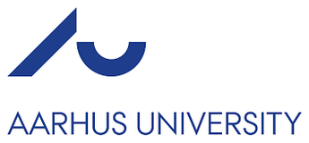
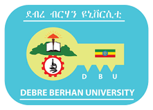
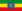
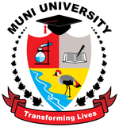
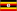
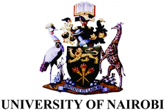
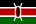
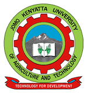

Five universities across four countries. Select any institution to visit its website.

Denmark · Contracting institutionThrough the Center for Quantitative Genetics and Genomics (QGG) and the Department of Animal and Veterinary Sciences (ANIVET), Faculty of Technical Sciences. AU leads overall coordination, hosts the MSc scholarship students, and contributes a co-lead to every thematic group.
Visit international.au.dk →

Ethiopia · Primary partnerAcademic partner co-implementing both the partnership and scholarship components, contributing modules grounded in the Ethiopian livestock-production context and faculty across the thematic groups.
Visit dbu.edu.et →

Uganda · Primary partnerAcademic partner linking curricula to farming-community realities in northern Uganda, contributing thematic co-leads, content and faculty exchanges.
Visit muni.ac.ug →

Kenya · Primary partnerAcademic partner co-implementing the partnership and scholarship components. UoN coordinates the secondary-partner relationship with JKUAT and contributes to the veterinary and One Health themes.
Visit uonbi.ac.ke →
Kenya · Secondary partner (through UoN)Brings the One Health dimension to the curriculum, bridging animal, human and environmental health. JKUAT participates through the University of Nairobi channel.
Visit jkuat.ac.ke →